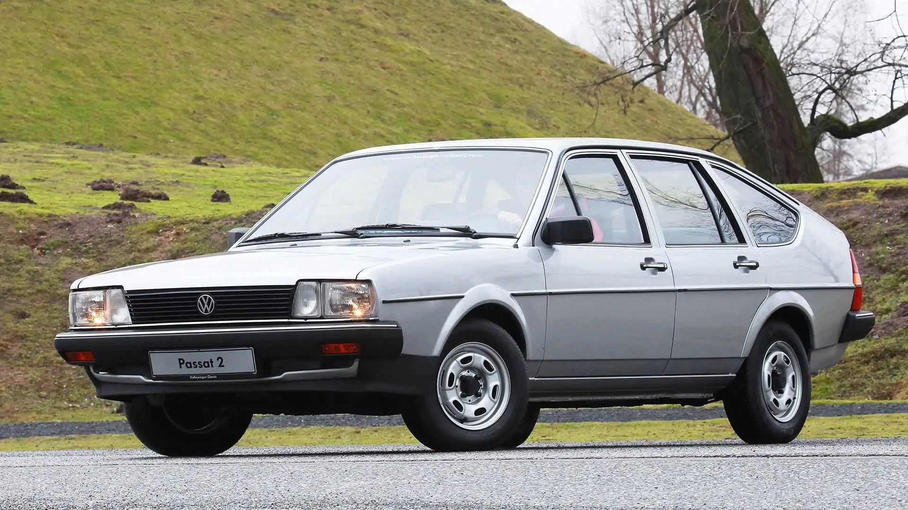
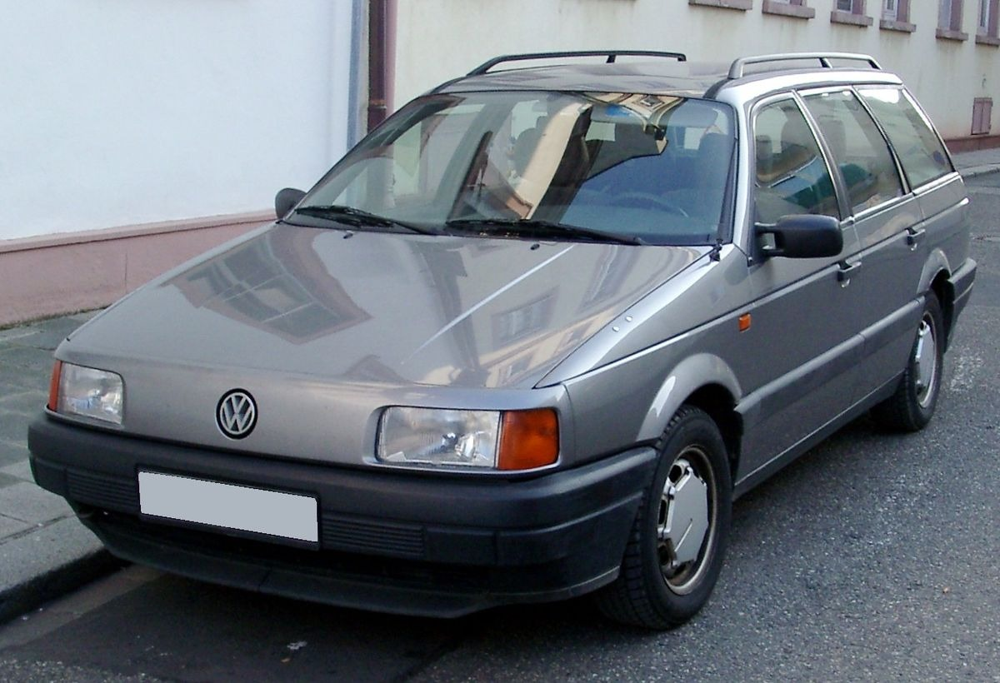
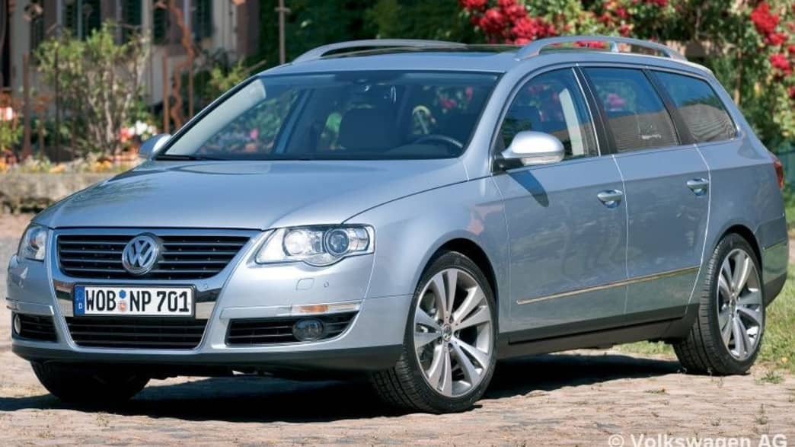

Válassz egy generációt:
Volkswagen Passat B1 (1973–1981)

1973–1981
Részletek
Volkswagen Passat B2 (1980–1988)

1980–1988
Részletek
Volkswagen Passat B3 (1988–1993)

1988–1993
Részletek
Volkswagen Passat B4 (1993–1997)
1993–1997
Részletek
Volkswagen Passat B5 (1996–2005)

1996–2005
Részletek
Volkswagen Passat B6 (2005–2010)

2005–2010
Részletek
Volkswagen Passat B7 (2010–2014)
2010–2014
Részletek
Volkswagen Passat B8 (2014–2023)

2014–2023
Részletek